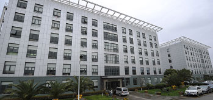
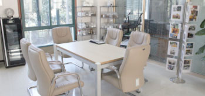
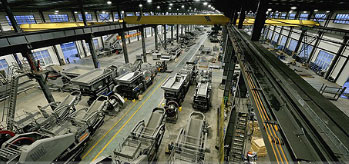
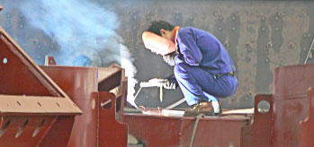

-

Zenith In Brief
Shanghai Zenith Mining and Construction Machinery Co., Ltd. is a hi-techengineering group. We are specialized in the research, development, and production of industrial crushingpowder grinding, mineral processing equipments and other related devices Our products have been sold to 120 countries and areas of Southeast Asia,East Europe,South America, the Middle East and Africa etc, and more foreign markets will be promoted in future.
-

Zenith Technology
New products development is a key part of Zenith culture since it was founded. Zenith R&D team is made of 78 senior engineers. The top seven engineers are winners of special central government allowance, which are for the outstanding contribution in science and technology.Recent development includes the Sand making machine, vertical roller mill, Hydraulic impact crusher,Track mounted crusher, PEW series jaw crusher, quarry crusher, etc.
-

Zenith Factory
Headquarter of Zenith is located in Shanghai, China and now we have two manufacturing bases as our strong support. One is located in Shanghai about 450,000 square meters, and the other is in Qidong city, about 600,000 square meters. It takes about one-hour driving from Shanghai to Qidong city.Up to now, we have sales and service offices, and distributors in over 20 countries, more and more effective service will be supplied to local customers.
-

Zenith Service
The wide product range enables us to provide our customers with stand-alone machines or complete processing plants. Based on our customers’ request and budget, our experts make efficient, reliable solutions. Following customers’ order we produce strictly, what’s more, before placing the order every customer has the chance to visit zenith working machines or complete plant in the site. To ease the trip for every visitor to China, in particular the first-time visitor.
Shanghai Zenith Company © 2000-2014 Copyrights. sitemap Spare Parts